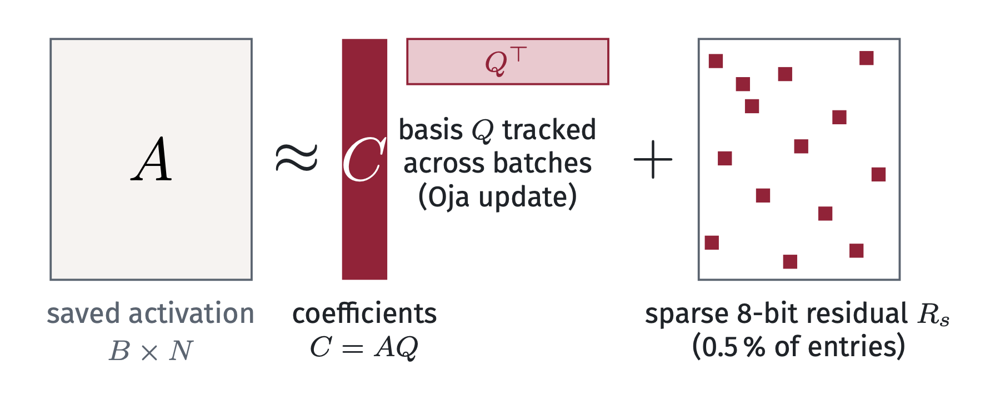
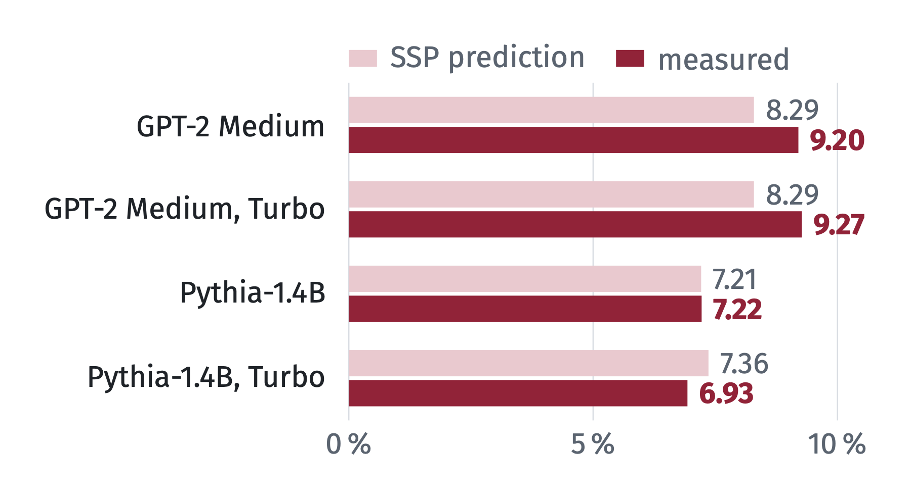
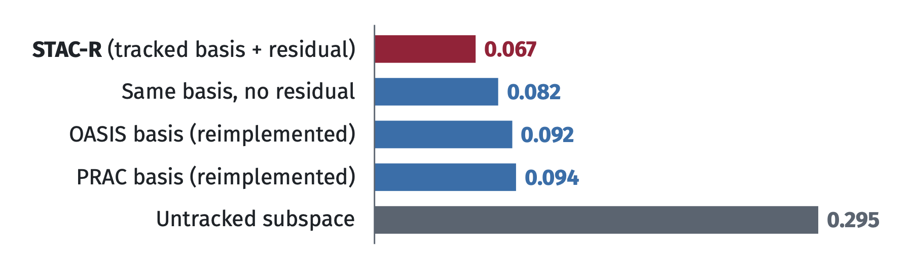
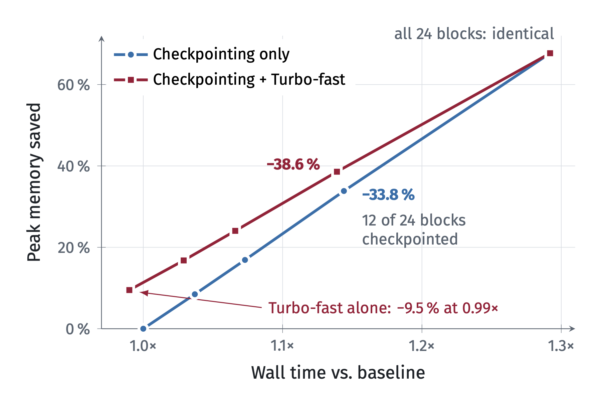

STAC-R
Subspace-Tracked Activation Compression with Residuals
Department of Mechanical, Industrial and Aerospace Engineering, Concordia University, Montréal
Abstract
Training-memory reduction requires identifying which saved tensors drive peak usage and ensuring high-fidelity backward contractions from compressed states. We formalize saved-activation compression as a target-surface prediction problem: estimate, before training, the resident saved surface a compressor can replace and the parameter-gradient error it induces. We introduce STAC-R (Subspace-Tracked Activation Compression with Residuals), a saved-tensor wrapper that stores activations as persistent low-rank coefficients plus a sparse quantized residual and contracts weight gradients directly from these factors, bypassing full decompression. The Saved-Surface Predictor (\(\mathrm{SSP}=A_C^+/P\)) estimates the peak-memory reduction available on that surface, and a gradient bridge links reconstruction error to parameter-gradient cosine similarity. On GPT-2 Medium/Large and Pythia-1.4B, full STAC-R reduces peak memory by 7.2-11.8% with mean gradient cosine \(\ge 0.98\) in the GPT-2 Medium replay and the Pythia-1.4B 10k-step cohort (5 seeds: +1.14% validation perplexity); on BERT fine-tuning (SST-2), it reduces peak memory by 12.45% with a 0.15 pp accuracy decrease. Same-surface replays give 0.9813 mean gradient cosine versus 0.9236 for iso-byte SVD and 0.6949 for an untracked subspace. The speed-prioritized Turbo-fast variant reduces GPT-2 Medium peak memory by 9.50% at 0.99× baseline wall time (+1.82% perplexity at 400 steps), and, at sequence length 4096, the peak memory of Qwen-2.5-7B, Llama-3.1-8B, and Mistral-7B by 6.65-7.46% at 0.90-0.92× (memory and runtime only). Applied to the blocks that activation checkpointing does not recompute, it raises the GPT-2 Medium saving from 33.84% to 38.58% at similar wall time (+0.61% versus +0.02% perplexity); its per-GPU saving stays near 8.9% under DDP up to eight GPUs and rises with FSDP2 world size. Once recomputation has removed the target surface, compression has nothing to act on (\(\mathrm{SSP}\to 0\)): the memory increases observed on Qwen-2.5-1.5B and Llama-3.2-1B occur against checkpointed baselines, and in a controlled sweep against uncheckpointed baselines both models reduce peak memory by 7-8%.
The problemCompression must hit the peak and keep the gradient
Peak training memory comes from several surfaces: parameters, optimizer state, the activations saved for the backward pass, and workspaces. Compressing saved activations lowers the peak only if it (1) replaces the tensors that set the peak and (2) keeps the backward contraction that forms the weight gradient. A high compression ratio guarantees neither, so we treat compression as a prediction problem: estimate both before training.
MethodA tracked low-rank basis plus a sparse residual

- Each saved activation \(A \in \mathbb{R}^{B\times N}\) is stored as \(\widehat A = C\,Q^\top + R_s\), with coefficients \(C = AQ\).
- The orthonormal basis \(Q\) is tracked across batches with an Oja update, so its cost is amortized instead of recomputed every step.
- \(R_s\) is a sparse 8-bit residual (0.5% of entries): an explicit correction channel for off-subspace error.
- The backward pass contracts directly from the factors, with no decompression: \(\widehat{\nabla W} = (G^\top C)\,Q^\top + G^\top R_s\). The forward map and optimizer are unchanged.
- Turbo-fast, the deployment variant, runs full STAC-R for two steps, then freezes \(Q\) and drops \(R_s\).
PredictionPredict the saving and the fidelity cost before training

MechanismTracking and the residual keep the gradient faithful

- Over a 240-step full-model replay, STAC-R keeps a mean gradient cosine of 0.981, vs 0.695 for an untracked subspace at the same rank.
- At the same peak memory (±0.11 pp), STAC-R has the lowest perplexity cost: +0.92% vs +1.64–2.02% for the other bases. The residual costs runtime (1.70× vs ≤1.07×).
Results7–12% lower peak memory at a small quality cost
| Model | Peak memory | Quality | Grad. cosine | Time |
|---|---|---|---|---|
| GPT-2 Medium | −9.20% | +1.46% PPL | 0.981 | 1.95× |
| GPT-2 Large | −11.75% | +1.15% PPL | – | 2.40× |
| Pythia-1.4B | −7.22% | +1.14% PPL (10k steps, 5 seeds) | 0.992 | 1.90× |
| BERT-base, SST-2 | −12.45% | −0.15 pp accuracy (3 seeds) | – | 2.04× |
Full STAC-R, rank 8 on the MLP linear layers; matched cohorts on one RTX 5090, each row compared with its own baseline. Turbo-fast (below) is the speed-prioritized variant.
DeploymentComplements checkpointing and scales to 8B

- Turbo-fast alone: −9.5% peak memory at 0.99× baseline time (+1.82% PPL at 400 steps).
- 7–8B, sequence length 4096 (H100): Qwen-2.5-7B −7.38%, Llama-3.1-8B −6.65%, Mistral-7B −7.46%, at 0.90–0.92× time (memory and runtime only).
- Multi-GPU: about 8.9% per GPU under DDP up to 8 GPUs; under FSDP2 it grows from 6.5% to 10.0% (1 to 4 GPUs).
TakeawayWhen to use it
- Checkpointing fits your time budget? Use it first: it reaches the lowest peak (−67.7% at 1.29× on GPT-2 Medium).
- Recomputation already removed the activations? Then SSP → 0 and there is nothing to compress.
- Activations resident? SSP estimates the saving and Lemma 1 bounds the fidelity cost. If runtime is binding, use Turbo-fast.
- Using both? Compress only the blocks you don't recompute.
Limitations. Quality is not reported at 7B/8B scale, distributed results cover per-GPU memory only, and quality should be validated at the intended training horizon. See the paper's Operating Regimes section.
Come say hiPoster session in Paris
CiteBibTeX
@inproceedings{hamed2026stacr,
title = {{STAC-R}: Subspace-Tracked Activation Compression with Residuals},
author = {Hamed, Manar and Yaakoubi, Yassine},
booktitle = {Advances in Neural Information Processing Systems},
year = {2026}
}ContactQuestions?
Email manar.hamed@mail.concordia.ca or yassine.yaakoubi@concordia.ca, or open an issue on GitHub.